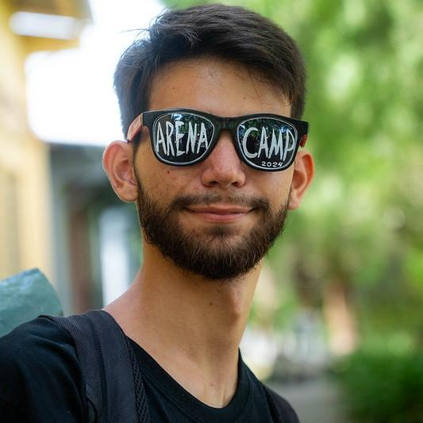
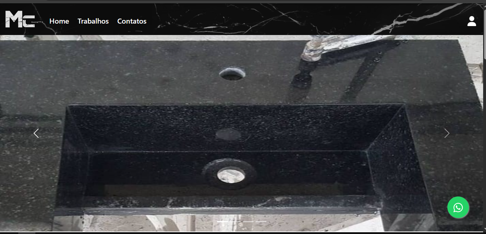
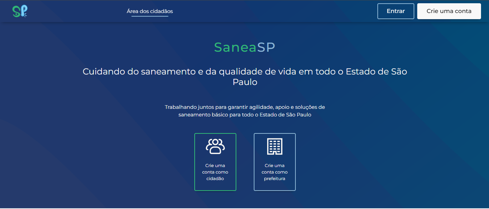
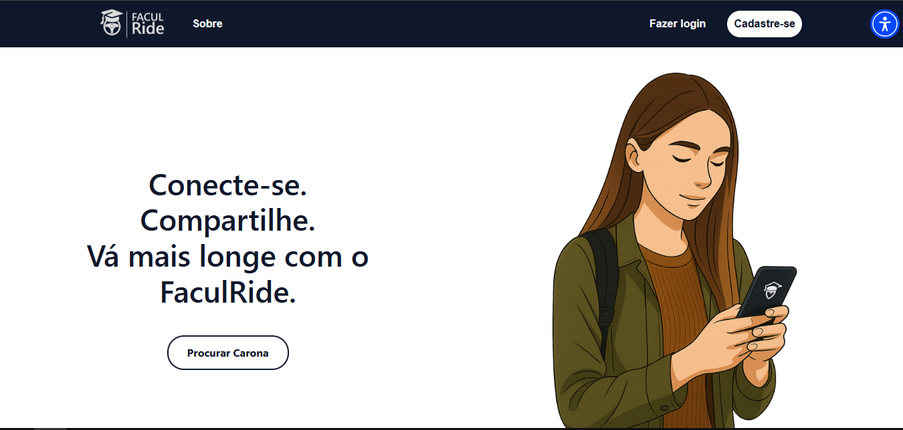

Sobre mim
Meu nome é Davy Oliveira Ribeiro, desenvolvedor de software pela FATEC Votorantim, sou apaixonado por tecnologia, e doido por desafios e a solução de problemas, desde que comecei na área de Design de Games. Foi isso que me atraiu por tecnologia: quebrar a cabeça em um problema até achar uma solução e ficar super feliz quando a solução que pensou deu certo e resolveu o problema.
Atualmente estou me dedicando a aprender as linguagens e tecnologias do desenvolvimento full-stack, explorando tanto o front-end quanto o back-end, como o Angular, React, Node.js, TypeScript, SQL Server e MongoDB. Isso tem me dado novos desafios, exigindo mais atenção, enormes pesquisas e muita determinação para integrar tudo da melhor forma possível.
Por isso, veja os projetos que fiz e veja neles os meus saberes e a minha dedicação com o mundo da programação. Fique a vontade em ver no meu Github e entrar em contato comigo no Linkedin, ou enviar um Email. Espero que goste :D

Linha do Tempo
Projetos

Marmoraria Chiovetto
Trabalho de Conclusão de Curso da Etec Fernando Prestes. para a marmoraria do senhor Chiovetto, com o objetivo de melhorar as vendas e na organização de seu trabalho
Ver Projeto
SaneaSP
Projeto Integrador Fatec Votorantim do 1° ao 4° Semestre, para os cidadãos denunciarem os problemas de saneamento básico das cidades Votorantim e Sorocaba
Ver Projeto
FaculRide
Projeto Integrador do 5° Semestre para os alunos da Fatec Votorantim conseguir carona para irem a faculdade
Ver Projeto